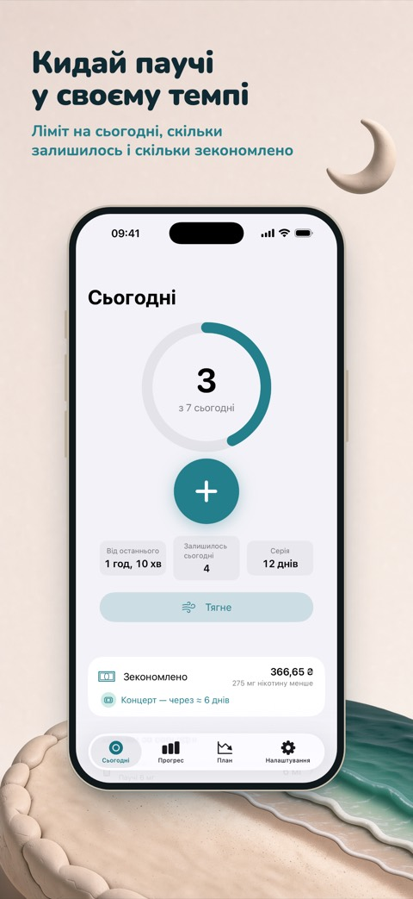
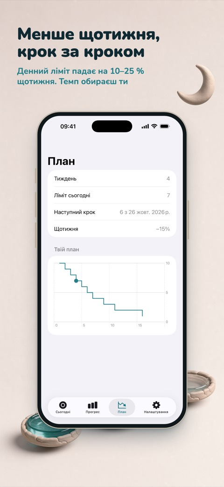
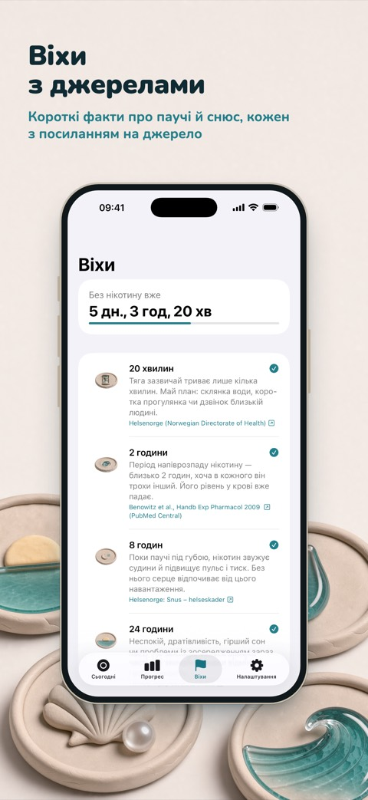

Кинь нікотинові паучі у своєму темпі
Ebb — застосунок для iPhone для тих, хто хоче скоротити або кинути нікотинові паучі й снюс. Записуй паучі в один дотик, іди за планом, що щотижня трохи знижує ліміт, і дивись, як зекономлені гроші стають мрією.



Два шляхи
Скоротити. Денний ліміт щотижня знижується на 10–25%, а Ebb показує, скільки лишилось на сьогодні. Перевищення просто записується, без покарань.
Кинути зараз. Таймер від останнього паучі й дванадцять віх від 20 хвилин до року, кожна з коротким фактом і посиланням на джерело.
Приватність
Без акаунта й реклами. Записи лишаються на твоїх пристроях, анонімну статистику можна вимкнути в Налаштуваннях. Базові функції безкоштовні, Ebb Pro — річна підписка або разова покупка, ціни й умови показує App Store.
Ebb для дорослих 18+. Це не медичний застосунок, і він не дає медичних порад.